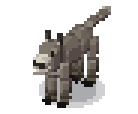
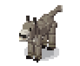
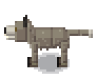
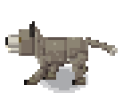

Grimfur Alpha
Grimfur Alpha is an elite of Grimbough Forest.
Grimfur Alpha is an elite of Grimbough Forest.
In the game
In the game the Grimfur Alpha is level 38, elite (a group's fight). It is found in The Wolfways. It can drop The Alpha's Fang (always), Den-Hide Jerkin (25%) and Pack-Elder Mantle (25%).
Quests
Quests that ask for it: The Alpha of the Den (behind the level cap).
Gallery







